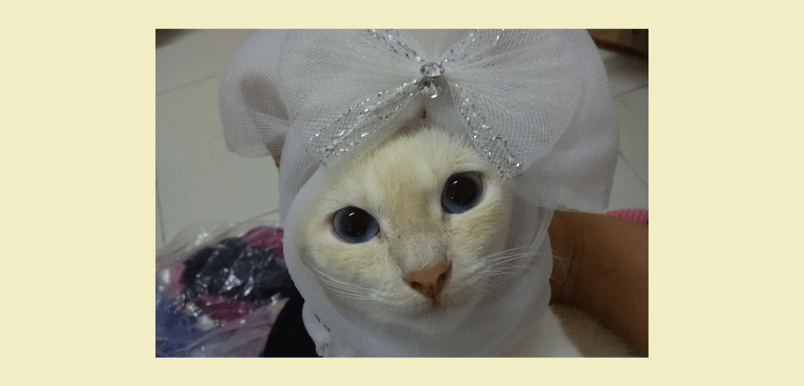
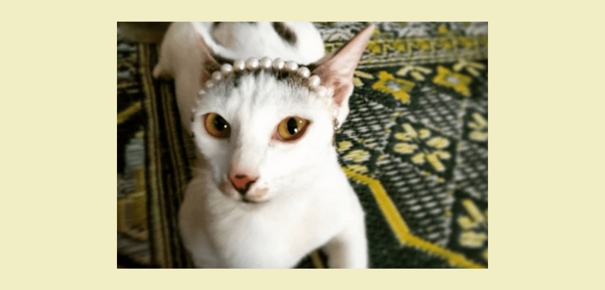

My Pets
Cats are the most beautiful gift that god has created for his servants. Cats are also a big part of the family and their departure is irreplaceable. For cat lovers, of course, they challenge their cats like they are full of oil.

Aneesa
Awang
Didi & Nana
Kiko
Kiko
Kittens

Lala
Lala & kittens
Lion
Lion,didi & nana
Meimei
There are many cats that I have kept from Sabah. Among the cats I keep are Thomas, Tommy, Kiko, Lala, and Tiger. My first cat was Thomas. I can’t forget the first time he came to my house in a very dirty state. My siblings wanted to take care of me but I didn't care. Then I fell in love with the street cat and my family took care of Thomas in our small flat. Thomas is a smart cat, he knows how to throw feces in the toilet. His passing so far has broken my heart. My mom and I took a long time to forget about it. Almost every day we mourn the loss. After the disappearance of thomas, we defended another cat named Tommy, but for a moment we took care of him because he was sick within 3 days of being locked up by an irresponsible person. After that we defended a cat named Kiko. Kiko was our neighbor's gift cat, they handed Kiko to us because they wanted to move to Sarawak. We are so happy to take care of Kiko. Kiko is also clever in throwing feces in the bathroom. In less than a year Kiko followed in Thomas's footsteps, gone forever. Of course our family was very sad and cried wholeheartedly. After that I kept a cat named Lala and Tiger. We took care of Lala first, then we brought Tiger as our family member. Lala has a child with Tiger. When we got the news that our family had to move to peninsular malaysia, my family and I were very sad because we had to leave our pet cat. We couldn’t bring it all in because we had financial constraints. Before we moved we had sent Lala and her children to people who were willing to take care of her. When I was about to send it to the new master, I cried so hard, I wrote this essay and I cried. We were only able to bring one cat because the cost was too expensive for us. We decided to bring Tiger alone, and leave Lala and her son. I summarize this story of mine, Having brought Tiger to the peninsula, in a few days he disappeared without a trace till now. The day we lost Tiger, a cat had come to our new home named Lion. Lion is a good cat and not naughty, its life is very long said its owner. He was with us for only a year and then he left forever. He’s a very good brother, he takes care of our four gray pet cats. My gray cat, four of which disappeared without a trace, they left first before Lion left us forever. Finally, the cats named Awang, Miko, Aida and memei are my aunt's pet cats that we used to keep for a while. Their lives were also short, Miko and Aida died of a virus infection. Awang disappeared without a trace. The only ones left now are the memei who are in the village. Now we only defend 4 cats named Aneesa and her kittens named Snowy, Blacky and Baby. Alahmdulillah for now they are fine without any disease.